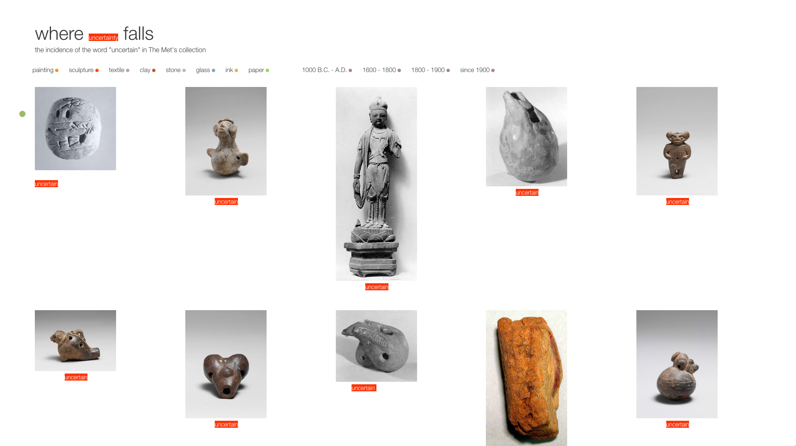

Gender & Medium
Clare Churchouse
exploring THE MET data
As part of MSDV Major Studio 1, we worked with The Metropolitan Museum of Art's database.
The Met's collection spans over 5,000 years and includes roughly one and a half million objects from an array of cultures.
Gender & medium focuses on The Modern & Contemporary Art Collection, one of The Met's seventeen collection departments. As of January 2018, Modern & Contemporary Art contained 14,350 artworks. Gender is not formally tracked across The Met's holdings, and this project aims to: 1) establish the percentage of artworks made by women; 2) identify artists with the greatest number of artworks; and 3) examine correlations between particular mediums and gender.
A second, qualitative, project - where uncertainty falls - approaches The Met collection from the point of view of text used to describe artworks. This project highlights all artworks whose web label description, title or date contains the word 'uncertain' or 'uncertainty.'
Overview
Background included an overview of The Met's holdings, database, api, and digital strategies, including informational meetings with The Digital Department's Jennie Choi, Spencer Kiser and Loic Tallon at different points of the project.
I examined the data using CSVKit, selecting the collection's database of 14,350 artworks. Each artists was identified by gender (on 'Artist Display Name'), and the category of 'medium' was based on the collection's ‘Classification’ column of 105 different mediums. For example, painting, drawing, prints, ceramics, textiles, as well as specific categories within and across mediums such as textiles-tapestries.
Gender & Medium:
Process
Role: Concept design, data analysis, data visualizations, web design
Tools: CSVKit, p5.js, Javascript, JQuery, HTML/CSS
Data: MetObjects.csv, January 2018, spreadsheet.
The Met's github database
Tools
Most of the department's artwork images are not in the public domain, thus the visualizations focus on the number of artworks, and provide headshots where available. Most of these are from wikipedia; some artists headshots are not readily available online.
The aim of the depictions is to display particular aspects of the database having to do with artwork medium and gender, and to see what correlations between the two might exist.
Website
Out of 14,350 artworks (rounded to 2 decimal points):
- 10,829 are by male artists (75.46%)
- 2,027 are by female artist (14.13%)
- 1,318 are by unknown artists (9.18%) (including many listed with manufacturing companies from around 1900s)
- 128 are by couples / collaboratives with both genders (0.89%)
- 48 are by named artist but gender not yet identified (0.33%)
The top ten women collected with the number of their artworks in the collection are:
- Dorothy Liebes, 89
- Anni Albers, 80
- Margarete Willers, 65
- Vuokko Eskolin-Nurmesniemi, 52
- Eva Zeisel, 51
- Hilde Reindl, 48
- Gunta Stolzl, 39
- Marion Weeber, 35
- Lygia Pape, 32
- Georgia O'Keeffe, 22
And the top ten collected men with the number of their artworks in the collection are:
- Raymond Marsh, 927
- Carlo Scarpa, 244
- Louis A. Stirn, 172
- Abraham Walkowitz, 167
- Pablo Picasso, 149
- Jackson Pollock, 117
- Henri Matisse, 105
- Marsden Hartley, 104
- Paul Klee, 98
- Arthur Dove, 81
Notably, of the women with the largest number of holdings, only 4 out of 10: Margarete Willers, Lygia Pape, Georgia O’Keeffe, Hilde Reindl, are predominantly represented in the collection with drawings and paintings. The opposite holds true for men, with 8 out of 10 men principally represented in the collection with paintings, drawings and prints.
Looking at medium that contain more than 10 artworks, men outnumber women in each of the mediums collected by the department with the exception of textile-related mediums. Here, women outnumber men in the following classifications: Textiles: - miscellaneous: 12 women, 0 men; Textiles-samples books: 13 women, 1 man; Textiles-tapestries: 21 women, 9 men; Textiles: 59 women, 7 men; Textiles woven 251 women, 36 men.
Findings

Qualitative: a second project uses public domain images from the whole of The Met database using ‘uncertain’ and ‘uncertainty’ as a search term and organizing principle to view what is assessed in the text as 'uncertain/ty.' The layout works with the relation between text and image, and the site opens with the descriptions hidden.
Where uncertainty falls
Qualitative project
Spatial contexts works with the project data and reimagines it within a gallery space. 'If you were a woman - a man - unknown - would your work be in the collection?' takes the project into physical space. The aim is to invite inquiry in a gallery setting: who has made these artworks? The lengths and color of the lines reflect gender. The lines lead to specific works. Who's in this room by gender?
Spatial contexts project